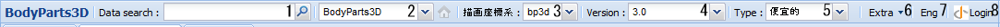
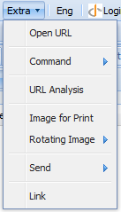

Anatomographyタブのヘッダコントロールは下記の構成をしています。

- Data Searchテキストボックス
Bodyparts3Dに登録されているパーツデータに対する検索を行います。
検索結果はレフトパネルのSearchタブとして追加されていきます。
- データモデル選択ドロップダウンリスト
Bodyparts3Dに登録されいるデータモデルを選択します。
現在パレットに登録されているいずれのデータとも、データモデルと異なるモデルが選択されている場合、ボタンを押すことで、パレットの先頭に登録されているデータのデータモデルを選択することが可能です。
- 描画座標系選択ドロップダウンリスト
描画座標系を選択します。
- バージョン選択ドロップダウンリスト
各データモデルにおける、データバージョンを選択します。
- Type選択ドロップダウンリスト
描画に利用する階層構造Typeを選択します。
- Extraボタン

- Open URL
現在の操作状態を再現するためのURLを開きます。
- Command
各種操作を実行します。
- Image controls
- Move
- up：カメラおよび中心点を画像上の上方向に並行移動します。
- right：カメラおよび中心点を画像上の右方向に並行移動します。
- down：カメラおよび中心点を画像上の下方向に並行移動します。
- left：カメラおよび中心点を画像上の左方向に並行移動します。
- Centering：カメラおよび中心点を表示中のパーツ群の中心にくるように平行移動します。
- Centering & Zoom：カメラおよび中心点を表示中のパーツ群の中心にくるように平行移動し、全体が収まるように拡大率を調整します。
- Rotation
- up：中心点の周りを画像上の上方向に向かって視線が1°回転するようにカメラを移動します。
- right：中心点の周りを画像上の右方向に向かって視線が1°回転するようにカメラを移動します。
- down：中心点の周りを画像上の下方向に向かって視線が1°回転するようにカメラを移動します。
- left：中心点の周りを画像上の左方向に向かって視線が1°回転するようにカメラを移動します。
- H:0,V:0：正面から見た位置にカメラを移動します。
- H:90,V:0：正面から経度方向に90°回転した位置にカメラを移動します。
- H:180,V:0：背面から見た位置にカメラを移動します。
- H:270,V:0：正面から経度方向に270°回転した位置にカメラを移動します。
- H:180,V:90：上面から見た位置にカメラを移動します。
- H:0,V:270：下面から見た位置にカメラを移動します。
- Zoom
- Grid
- Grid(On/Off)：グリッドのON/OFFを切り替えます。
- Choose a Color：グリッドの色を選択します。
- Rect Length：グリッド1目盛の距離を指定します。
- Window controls
- Window size
- Width：画像幅のピクセル数を指定します。
- Height：画像高さのピクセル数を指定します。
- Auto Window Size：ウィンドウサイズに合わせて画像サイズを調整します。
- Background color
- Choose a Color：背景色を選択します。
- Transparent：チェックを入れると背景が透過になります。
- Default parts color：パーツのデフォルト色を指定します。
- Shortcut Keys：各種操作に対応するショートカットキーの確認およびカスタマイズをするダイアログが開きます。
- URL Analysis
現在の操作状態を再現するためのURLを理解しやすい形式で編集可能なダイアログを表示します。
- Image for Print
より高解像度の画像を表示します。
- Rotating Image
- Small image [120x120]：120px x 120pxの回転画像を表示します。
- Medium image [320x320]：320px x 320pxの回転画像を表示します。
- Large image [640x640]：640px x 640pxの回転画像を表示します。
- Send
- mail to somebody：現在選択しているパーツを選択した状態のURLをメールで送信します。
- Link：現在のURLを下記の3つの形式で表示します。
- このリンクを貼り付けてBodyParts3Dを共有できます：編集可能な状態で開くためのURL
- このリンクを貼り付けてイメージを共有できます:：現在の画像（編集不可）を開くためのURL
- HTMLを貼り付けてサイトにBodyParts3Dを埋め込みます:編集可能な状態でhtmlに埋め込むためのURL
- 言語切り替えボタン
Jpn：日本語に切り替えます。
Eng：英語に切り替えます。
- ログインボタン
管理者用のログインボタンです。